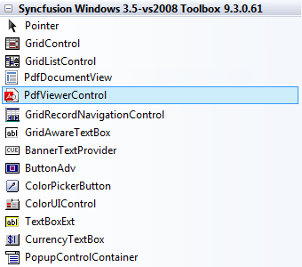
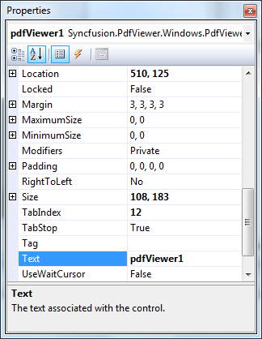

To add a PDF Viewer control to your application:
1. Open your form in the designer. Add the Syncfusion controls to your VS.NET toolbox if you haven't done so already (the install would have automatically done this unless you selected not to complete toolbox integration during installation).

Figure 5: PDF Viewer control in Toolbox
2. Drag a PDF Viewer control onto the form.
Appearance and behavior-related aspects of the PDF Viewer can be controlled by setting the appropriate properties through the properties grid.

Figure 6: Properties
3. Add Syncfusion.PdfViewer.Windows namespace.
|
C#:
using Syncfusion.PdfViewer.Windows;
//Initializing the PDF Viewer PdfViewer viewer = new PdfViewer();
//Loading the document in the PDF Viewer viewer.Load(@"c:/documents/myPDF.pdf");
VB:
Imports Syncfusion.PdfViewer.Windows
'Initializing the Pdf Viewer Dim viewer As PdfViewer = New PdfViewer()
'Loading the document in the Pdf Viewer viewer.Load("c:/documents/myPDF.pdf") |
Refer to Viewing PDF files for more information.